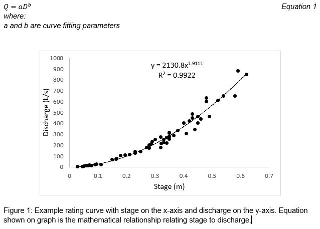
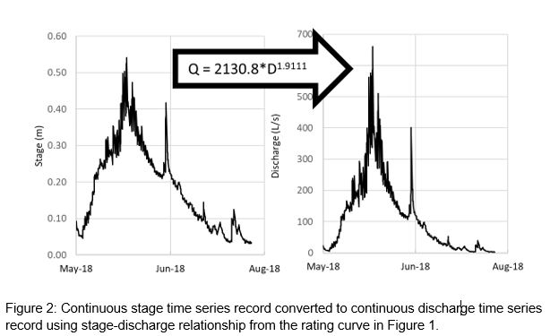
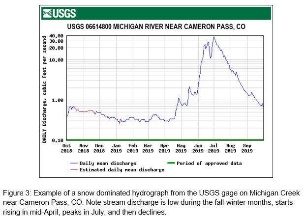
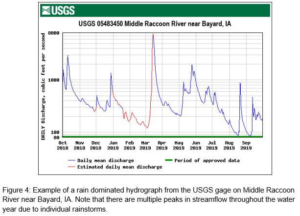

Chapter 9 Hydrographs and rating curves (6 pts)
A stream’s volumetric flow rate, hereafter referred to as discharge, is a parameter of interest for scientists and practitioners in various areas of hydrology. However, producing a continuous record of discharge (i.e., hydrograph) involves obtaining a continuous record of stage (i.e., water depth), making discharge measurements over a range of stages, establishing and maintaining a relation between the stage and discharge, and applying the stage-discharge relation to the stage record. A hydrograph can provide insight into the primary drivers of flow (i.e., rain vs snow) and can be tracked to ensure users have access to their water rights as well as be used in flooding risk assessments.
9.1 Overall Learning Objectives
At the end of this module, students should be able to describe hydrographs of rain vs snow dominated systems, create a stage-discharge relationship, and understand the different methods used to measure streamflow.
9.3 Lecture
9.3.1 Hydrographs and Rating Curves
A hydrograph is a time series of stream discharge at a specific point in a river. Hydrographs are constructed by continuously measuring stage (depth of water) and developing a rating curve (Figure 1), which is a relationship between stage (D) and discharge (Q) at a specific monitoring location. Discharge can be measured at stream gauging stations using the velocity-area or dilution gauging methods, or by installing a weir or flume. Weirs and flumes have specific geometry and a known relationship between stage and discharge. However, we often don’t have a weir or flume, and we have to construct this relationship by taking measurements of stage and discharge across a range of flows to develop the rating curve. The stage-discharge relationship typically takes the form of a power law equation (Equation 1) and is controlled by channel morphology. By using this mathematical relationship between stage and discharge we can convert a continuous stage record to a continuous discharge record (Figure 2).


As noted above, the stage-discharge relationship depends on the characteristics of the stream channel. Therefore, if the channel geometry changes as a result of erosion or deposition, the rating curve needs to be updated. Because of this, it would be ideal to take stage measurements at a control structure (i.e., weirs and flumes) or stable cross section (i.e., at bridges or where bedrock is confining the channel). However, this is not always possible and we must rebuild rating curves if there is significant change in channel morphology. Additionally, it is important not to extrapolate the stage-discharge relationship for data larger or smaller than the stages and discharges measured in the field that were used to create your rating curve. Extrapolating beyond the bounds of the rating curve leads to large uncertainty in the estimates discharge.
9.3.2 Rain versus Snow dominated systems
The shape of the hydrograph contains information about the system that you are working in. The most common conclusion that can be drawn from a hydrograph is whether a system is snow or rain dominated and in what hemisphere the stream is located. Snowmelt dominated streams in the northern hemisphere have peak flows in April or May, whereas snowmelt dominated systems in the southern hemisphere will typically have peak flows around October. In the northern hemisphere and indeed in the US, hydrologists prefer to conduct analyses based on the water year (October 1 - September 30) as opposed to the calendar year. This allows the comparison of incoming precipitation and outgoing streamflow, and specifically ensures that snow delivered in October-December is accounted for in the same time period that it is likely to melt, which may be in spring or summer of the following calendar year.
A snow dominated hydrograph (Figure 3) typically has a prominent peak in discharge during the spring and summer months driven by snowmelt as temperatures warm. Alternatively, a rain dominated hydrograph is characterized by high magnitude, short duration increases in flow due to specific rain events (Figure 4). These temporal patterns of high and low flows are referred to collectively as a river’s flow regime. The flow regime plays a key role in regulating geomorphic processes that shape river channels and floodplains, ecological processes that govern the life history of aquatic organisms, and is a major determinant of the biodiversity found in river ecosystems.


9.3.3 Making Stage Measurements
Stage, or water depth, measurements can be continuously collected with either analog methods (a chart recorder with float gauge) or digital methods (pressure transducers or capacitance rods). These instruments are commonly placed in a stilling well to reduce noise induced by waves. This continuous measurement is usually accompanied with a staff gage which is used to take point measurements on site by a technician. Often control structures are utilized when routinely taking stage measurements at a specific cross section. Control structures such as flumes and weirs are advantageous as they slow stream water, create a smooth surface to measure stage and have a well-known, unchanging geometry. Flumes are self-cleaning whereas weirs are not. Weirs tend to create a pond upstream of the structure.
USGS Gaging Station Videos:
Montana DNRC Videos:
9.4 Optional activity to gain deeper understanding of rating curve
Similar to a stage-discharge relationship you would make in a stream, you can make a volume-depth relationship with any cup or bowl at your house.
Materials:
- 2 different water vessels (i.e. cups, water bottles and bowls). Make sure they vary in size and shape.
- Measuring cup
- Ruler
- Notebook
- Using the measuring cup, add a known amount of water into one of the water vessels.
- Measure the height of the water with your ruler.
- Record the total amount of water in the cup and depth of the water.
- Repeat steps 1 – 3, 5 times. Be sure you have a large range of water depths ranging from almost empty to full.
- Repeat the above steps with your second water vessel.
- Plot your results for each water vessel separately. Put the depth of water on the x-axis and the volume on the y-axis. Add a best fit line to your plot. Include these two plots in your Assessment submission.
- Reflect: What are the differences between your two plots? What is the primary factor controlling the difference between the two volume-stage relationships you developed in the hands on activity?
9.5 Summary questions (6 pts)
- You have a rating curve that has good coverage between 1 and 7 ft depth.
- Is it appropriate to estimate discharge for a stage of 8.5 ft with this rating curve? If so, why? If not, why not?
- Describe the process to create a rating curve at a stream site be sure to include information on:
-The requirements of a good cross section to establish the site.
-When and how frequently you would make discharge measurements.
- What instrumentation would you use to collect continuous stage measurements.
- What causes the stage-discharge relationship (i.e., the rating curve) to change?